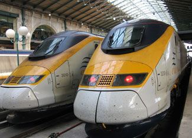

Aside from the overriding need to stabilize atmospheric carbon dioxide (CO2) levels in order to stabilize climate, there are several other compelling reasons for countries everywhere to restructure their transport systems, such as the need to prepare for falling oil production, to alleviate traffic congestion, and to reduce air pollution. The U.S. car-centered transportation model - three cars for every four people - that much of the world aspires to will not likely be viable over the long term, even for the United States.
The shape of future transportation systems centers on the changing role of the automobile. This in turn is being influenced by the transition from a predominantly rural global society to a largely urban one. By 2020, close to 55 percent of us will be living in cities, where the role of cars is diminishing. In Europe, where this process is well along, car sales in almost every country have peaked and are falling.
With world oil output close to peaking, there will not be enough economically recoverable oil to support a world fleet expansion along United States lines or, indeed, to sustain the United States fleet. Oil shocks are now a major security risk. The United States - a country in which 88 percent of the 133 million working people travels to work by car - is dangerously vulnerable.
Beyond the desire to stabilize climate, drivers almost everywhere are facing gridlock and worsening congestion, raising both frustration and the cost of doing business. In the United States, the average commuting time for workers has increased steadily since the early 1980s. The automobile promised mobility, but after a point, the growing number of automobiles in an increasingly urbanized world offers only the opposite: immobility.
While the future of transportation in cities lies with a mix of light rail, buses, bicycles, cars and walking, the future of intercity travel over distances of 500 miles or less belongs to high-speed trains. Japan, with its high-speed bullet trains, has pioneered this mode of travel. Operating at speeds up to 190 miles per hour, Japan’s bullet trains carry almost 1 million passengers a day. On some of the heavily used intercity high-speed rail lines, trains depart every three minutes.
Beginning in 1964 with the 322-mile line from Tokyo to Osaka, Japan’s high-speed rail network now stretches for 1,360 miles, linking nearly all of its major cities. One of the most heavily traveled links is the original line between Tokyo and Osaka, on which the bullet trains carry 117,000 passengers a day. The transit time of two hours and 30 minutes between the two cities compares with a driving time of eight hours. High-speed trains save time as well as energy.
Although Japan’s bullet trains have carried billions of passengers over 40 years at high speeds, there has not been a single casualty. Late arrivals average six seconds. If we were selecting seven wonders of the modern world, Japan’s high-speed rail system would surely be among them.
While the first European high-speed line, from Paris to Lyon, did not begin operation until 1981, Europe has made enormous strides since then. As of early 2007 there were 3,034 miles (4,883 kilometers) of high-speed rail lines operating in Europe, with 1,711 more miles to be added by 2010. The goal is to have a Europe-wide high-speed rail system integrating the new eastern countries - including Poland, the Czech Republic and Hungary - into a continental network by 2020.
Once high-speed links between cities begin operating, they dramatically raise the number of people traveling by train between cities. For example, when the Paris-to-Brussels link - a distance of 194 miles that is covered by train in 85 minutes - opened, the share of those traveling between the two cities by train rose from 24 percent to 50 percent. The car share dropped from 61 percent to 43 percent, and CO2-intensive plane travel virtually disappeared.
Carbon dioxide emissions per passenger mile on Europe’s high-speed trains are one third those of its cars and only one fourth those of its planes. In the Plan B economy, CO2 emissions from trains will essentially be zero, since they will be powered by green electricity. In addition to being comfortable and convenient, these rail links reduce air pollution, congestion, noise, and accidents. They also free travelers from the frustrations of traffic congestion and long airport security lines.
Existing international links are being joined by links between Paris and Stuttgart, Frankfurt and Paris, and a link from the Channel Tunnel to London that cuts the London-Paris travel time to scarcely two hours and 20 minutes. On the newer lines, trains are operating at up to 200 miles per hour.
There is a huge gap in high-speed rail between Japan and Europe on one hand, and between the rest of the world on the other. The United States has the Acela Express that links Washington, New York and Boston, but neither its speed nor its reliability comes close to the trains in Japan and Europe.
China is beginning to develop high-speed trains linking some of its major cities. The one introduced in 2007 from Beijing to Shanghai reduced travel time from 12 to 10 hours. China now has 3,750 miles of high-speed track and plans to double this by 2020.
In the United States, the need to both cut carbon emissions and to prepare for shrinking oil supplies calls for a shift in investment from roads and highways to railways. In 1956, President Eisenhower launched the interstate highway system, justifying it on national security grounds. Today the threat of climate change and the insecurity of oil supplies both argue for the construction of a high-speed electrified rail system, for both passenger and freight traffic. The relatively small amount of additional electricity needed could come from renewable sources, mainly wind farms.
The passenger rail system would be modeled after those of Japan and Europe. A high-speed transcontinental line that averaged 170 miles per hour would mean traveling coast-to-coast in 15 hours, even with stops in major cities along the way. There is a parallel need to develop an electrified national rail freight network that would greatly reduce the need for long-haul trucks.
Any meaningful global effort to cut transport CO2 emissions begins with the United States, which consumes more gasoline than the next 20 countries combined, including Japan, China, Russia, Germany, and Brazil. The United States - with 238 million vehicles out of the global 860 million, or roughly 28 percent of the world total - not only has the largest automobile fleet in the world, but is near the top in miles driven per car and near the bottom in fuel efficiency.
Three initiatives are needed in the United States. One is a meaningful gasoline tax. Phasing in a gasoline tax of 40 cents per gallon per year for the next 12 years and offsetting it with a reduction in income taxes would raise the U.S. gasoline tax to the $4 to $5 per gallon prevailing today in Europe. Combined with the rising price of gas itself, such a tax should be more than enough to encourage a shift to more fuel-efficient cars. The second measure is raising the fuel-efficiency standard from the 22 miles per gallon of cars sold in 2006 to 45 miles per gallon by 2020, a larger increase than the 35 miles per gallon approved by Congress in late 2007. This would help move the United States automobile industry in a fuel-efficient direction. Third, reaching CO2 reduction goals depends on a heavy shift of transportation funds from highway construction to urban transit and intercity rail construction.
|
 OLIVERN5/FLICKR The Eurostar rail network, pictured here at a stop in Paris, has more than 100 destinations throughout Europe. The company reports that traveling Europe by Eurostar rather than by plane emits 10 times less carbon dioxide. |
|
|